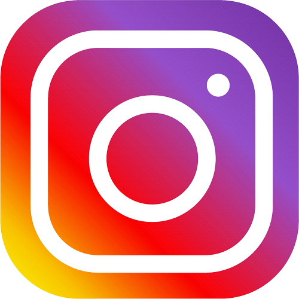

Mes projets - Engagement en tant que Trésorier du BDE
Avec des amis nous avions comme projet de se présenter en tant que nouveau BDE, afin
de pouvoir améliorer notre promos. Nous avons plusieurs projets, tels que la création d'un serveur minecraft pour toutes
les promos BUT - Informatique de Grenoble afin de créer un rapprochement entre les étudiants de la promos.
Nous allons aussi organiser différentes soirées ou sorties, que ce soit à thème tels que soirée déguisée, ou encore des soirées à activités
tels que laser game ou encore jump park.
Nous sommes partenaire exclusif Emblem qui permet d'avoir certaines offres chez leurs partenaires, ainsi nous proposons la carte
à nos nouveaux arrivants chaque début d'année
afin de leur proposer différentes offres chez différents partenaire de Emblem.
Après nous continuons à réfléchir sur différentes choses que nous pourrions faire et organiser, comme par exemple
la vente de pull avec un logo que nos étudiants auraient designé et proposé eux-mêmes.

Cette image représente le logo que nous avons designé pour notre BDE.
Voici le lien de notre compte instagram du BDE :
